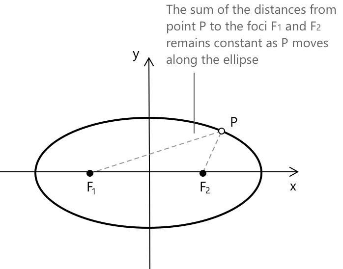
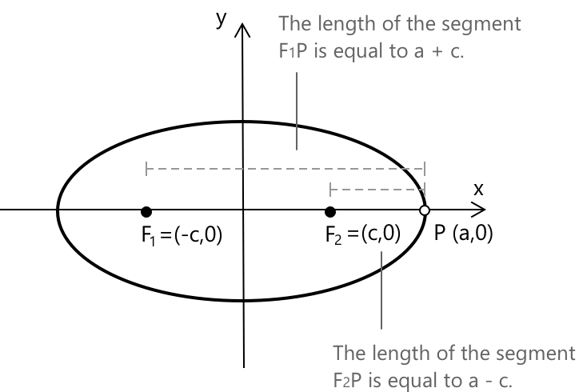
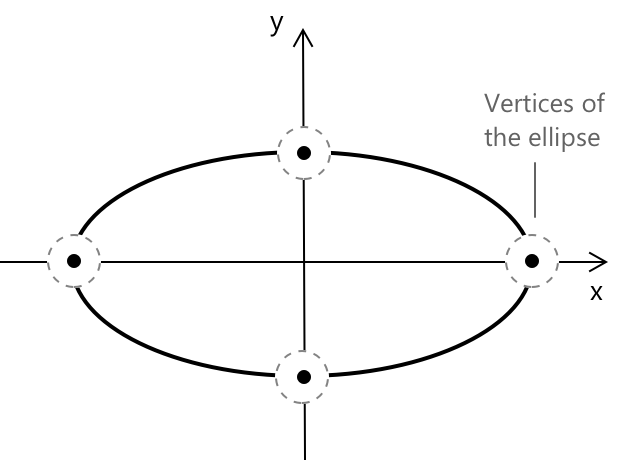
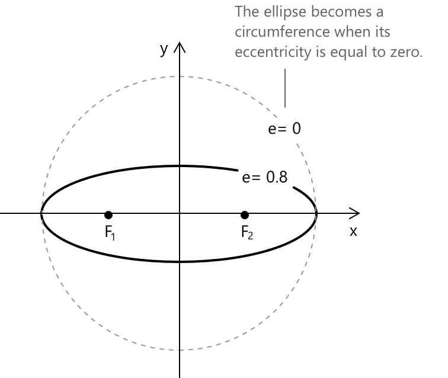

Еліпс
Вступ до конічних перетинів
При вивченні параболи ми побачили, що коли площина перетинає конус, отриманий الشكل, при проєктуванні на площину, може бути окружністю, параболою, еліпсом або гіперболою. Ці криві разом називають коніками. Більш формально, коніка — це алгебраїчна крива другого степеня на площині. Вона визначається як множина точок \( (x, y) \in \mathbb{R}^2 \), що задовольняють загальне квадратне рівняння від змінних \( x \) та \( y \):
\[ f(x, y) = a_{11}x^2 + 2a_{12}xy + a_{22}y^2 + 2a_{13}x + 2a_{23}y + a_{33} = 0 \]
Тут коефіцієнти \( a_{ij} \in \mathbb{R} \), і щоб крива дійсно була квадратною, ми вимагаємо, щоб і \( a_{11} \), і \( a_{22} \) були ненульовими.
Що таке еліпс
Дано дві фіксовані точки на площині, \( F_1 \) та \( F_2 \); еліпс визначається як множина всіх точок \( P \) на площині, таких що сума відстаней від \( P \) до кожного фокуса є сталою.
\[ \overline{PF_1} + \overline{PF_2} = \text{constant} \]

\( F_1 \) та \( F_2 \) — це фокуси еліпса. Припустимо, що фокус \( F_1 \) має координати \( (-c, 0) \), а фокус \( F_2 \) має координати \( (c, 0) \), тоді відстань між \( F_1 \) та \( F_2 \) називається фокальною відстанню і дорівнює \( 2c \). Середина відрізка \( \overline{F_1F_2} \) є центром еліпса.
Ми визначаємо велику вісь та малу вісь еліпса відповідно як найдовший і найкоротший діаметри, що проходять через його центр. Велика вісь лежить уздовж напрямку максимального розширення еліпса і проходить через обидва фокуси. Її загальна довжина становить \( 2a \), де \( a \) — це піввісь великої осі. Мала вісь перпендикулярна до великої осі та також проходить через центр еліпса. Її загальна довжина становить \( 2b \), де \( b \) — це піввісь малої осі.
Вибравши точку \( P = (a, 0) \), розташовану в правому кінці великої осі, ми розглянемо випадок, коли еліпс перетинає вісь \( x \) у своїй найвіддаленішій горизонтальній точці. У цій конфігурації відстань від лівого фокуса \( F_1 = (-c, 0) \) до точки \( P \) становить \(\overline{F_1P} = a + c\). Аналогічно, маємо \(\overline{F_2P} = a - c\).

З цього ми робимо висновок, що стала сума відстаней від будь-якої точки на еліпсі до двох фокусів дорівнює:
\[ \overline{F_1P} + \overline{F_2P} = (a + c) + (a - c) = 2a \]
У стандартному вигляді еліпс з центром у початку координат і горизонтальною великою віссю описується рівнянням:
\[ \frac{x^2}{a^2} + \frac{y^2}{b^2} = 1 \]
де \( b^2 = a^2 - c^2 \), при \( b > 0 \) та \( a > b \), звідси випливає, що:
\[ c = \sqrt{a^2 – b^2} \]
Чому сума відстаней до фокусів в еліпсі завжди стала?
Тому що саме це його визначає. Еліпс — це множина всіх точок, для яких сума відстаней до двох фокусів дорівнює рівно \( 2a \). Будь-яка точка, що не задовольняє цю умову, лежить зовні або всередині кривої.
Вершини
Еліпс перетинає координатні осі в чотирьох ключових точках — своїх вершинах. Дві точки на великій осі представляють найвіддаленіші горизонтальні межі.

Дві точки на малій осі визначають вертикальні межі. Усі вони симетричні відносно центру і відображають повний геометричний відбиток еліпса.
Ексцентриситет
Відношення між фокальною відстанню та довжиною великої осі еліпса називається його ексцентриситетом. Його позначають \( e \) і він задовольняє умову:
\[ 0 \leq e < 1 \]

Чим ближче \( e \) до 0, тим більше еліпс нагадує коло. Коли \( e \) наближається до 1, еліпс стає дедалі більш витягнутим. Значення ексцентриситету \( e \) задано формулою:
\[ e = \frac{c}{a} = \frac{\sqrt{a^2 – b^2}}{a} \]
Ексцентриситет описує, наскільки «витягнутим» є еліпс. Коли \( e = 0 \), еліпс не відрізняється від кола, а його фокуси збігаються в центрі. Зі збільшенням \( e \) фокуси віддаляються один від одного, і форма витягується вздовж великої осі. Важливим є не розмір, а відношення: ексцентриситет є чистою мірою форми.
Приклад
Знайдемо рівняння еліпса з фокусами \( F_1 = (1, 0) \) та \( F_2 = (-1, 0) \), такий що сума відстаней від будь-якої точки еліпса до двох фокусів дорівнює 6.
Точка \( P(x, y) \) належить еліпсу, якщо вона задовольняє умову:
\[ \sqrt{(x - 1)^2 + y^2} + \sqrt{(x + 1)^2 + y^2} = 6 \]
Кожен квадратний корінь представляє евклідову відстань між \( P(x, y) \) та одним із двох фокусів. Це рівняння виражає геометричне означення еліпса: множина всіх точок на площині, таких що сума їхніх відстаней до двох фокусів є сталою. Отже, для визначення рівняння еліпса потрібно просто виконати необхідні обчислення. Маємо:
\[ \begin{align} &(x - 1)^2 + y^2 = 36 + (x + 1)^2 + y^2 - 12\sqrt{(x + 1)^2 + y^2}\\[0.5em] &x^2 – 2x + 1 + y^2 = 36 + x^2 +2x +1 +y^2 – 12\sqrt{(x + 1)^2 + y^2}\\[0.5em] &-4x -36 = - 12\sqrt{(x + 1)^2 + y^2}\\[0.5em] &x + 9 = 3\sqrt{(x + 1)^2 + y^2}\\[0.5em] \end{align} \]
Підносячи обидві частини рівняння до квадрата, отримаємо:
\[ \begin{align} &(x + 9)^2 = (3\sqrt{(x + 1)^2 + y^2})^2\\[0.5em] &x^2 + 18x +81 = 9x^2 +18x +9 + 9y^2\\[0.5em] &8x^2 + 9y^2 = 72\\[0.5em] \end{align} \]
Поділивши обидві частини рівняння на 72, отримаємо:
\[ \frac{8x^2}{72} + \frac{9y^2}{72} = 1 \]
Отже, рівняння еліпса, що проходить через зазначені вище точки, і такого, що сума відстаней від будь-якої точки \( P \) на кривій до двох фокусів дорівнює 6, має вигляд:
\[ \frac{x^2}{9} + \frac{y^2}{8} = 1 \]
Глосарій
-
Еліпс: множина всіх точок на площині, де сума відстаней до двох фіксованих точок (фокусів) є сталою.
-
Фокуси: дві фіксовані точки на площині, що використовуються для означення еліпса.
-
Конічний переріз: крива, утворена перетином площини та конуса; включає кола, параболи, еліпси та гіперболи.
-
Велика вісь: найдовший діаметр еліпса, що проходить через фокуси та центр. Її довжина дорівнює \( 2a \).
-
Велика піввісь: половина довжини великої осі, позначається \( a \).
-
Мала вісь: найкоротший діаметр еліпса, перпендикулярний до великої осі та що проходить через центр. Її довжина дорівнює \( 2b \).
-
Мала піввісь: половина довжини малої осі, позначається \( b \).
-
Центр: середина відрізка, що з'єднує два фокуси.
-
Фокальна відстань: відстань між двома фокусами, що дорівнює \( 2c \).
-
Вершини: чотири точки, в яких еліпс перетинає координатні осі.
-
Ексцентриситет \(e\): відношення фокальної відстані \( 2c \) до довжини великої осі \( 2a \), \( e = c/a \). Це міра того, наскільки витягнутим є еліпс, при цьому \( 0 \leq e < 1 \).